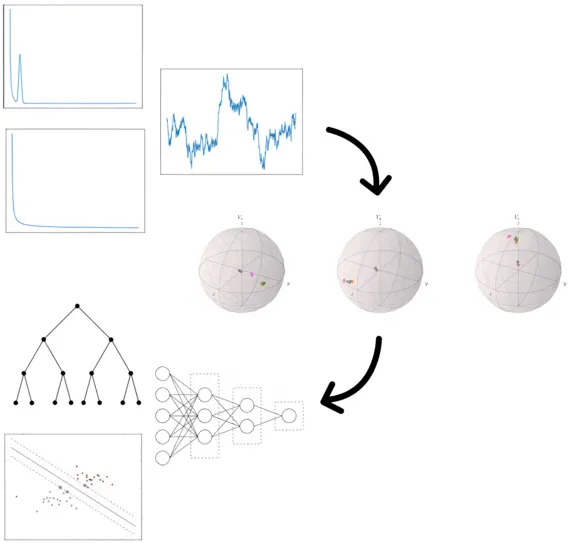

Quantum Feature Space of a Qubit Coupled to an Arbitrary Bath
Demonstrates that quantum noise operators can be inferred using regression more efficiently and accurately than deep learning approaches. Introduces a compact parameterisation to characterise complex qubit-bath interactions.